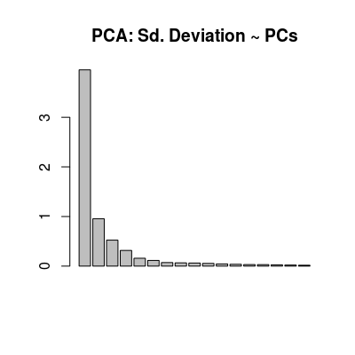

Short-term UNIMAN datasets of 200 samples from 17 polymeric sensors. The datasets contains two matricies:
C |
The concentration matrix of 200 rows and 3 columns encodes the concentration profile for three gases, ammonia, propanoic acid and n-buthanol. The concentration units are given in the percentage volume (% vol.). Ammonia has three concentration levels 0.01, 0.02 and 0.05, propanoic acid - three levels 0.01, 0.02 and 0.05, and n-buthanol - two levels 0.1 and 1. |
dat |
The data matrix of 200 rows and 17
columns cotains the steady-state signals of 17 sensors in
response to the concentration profle C. |
The reference dataset has been measured at The University of Manchester (UNIMAN). Three analytes ammonia, propanoic acid and n-buthanol, at different concentration levels, were measured for 10 months with an array of seventeen conducting polymer sensors.
In modeling of the array we make the distinction between
short-term and long-term reference data. Two hundred
samples from the first 6 days are used to characterize
the array assuming the absence of drift. The long-term
reference data (not published within the package) counts
for the complete number of samples from 10 months, these
data were used to model the sensor noise and drift, see
UNIMANsnoise and UNIMANdnoise
for more details.
A pre-processing procedure on outliers removal was
applied to the reference data. The standard method based
on the squared Mahalanobis distance was used with
quantile equal to 0.975%.
List of 3 $ C : num [1:200, 1:3] 0.01 0.01 0.01 0.01 0.01 0.02 0.02 0.02 0.02 0.02 ... ..- attr(*, "dimnames")=List of 2 .. ..$ : NULL .. ..$ : chr [1:3] "Ammonia" "Propanoic" "n-buthanol" $ dat : num [1:200, 1:17] 8.9 8.88 8.87 8.86 8.73 ... $ dat.corrected: num [1:200, 1:17] 8.56 8.6 8.53 8.58 8.53 ... ..- attr(*, "scaled:center")= num [1:17] 8.53 8.31 8.08 5.99 7.77 ... ..- attr(*, "scaled:scale")= num [1:17] 0.729 0.544 0.655 0.387 0.684 ...C <- UNIMANshort$C dat <- UNIMANshort$dat # plot sensors in affinity space of gases #plotAffinitySpace(conc=C, sdata=dat, gases=c(2, 1)) #plotAffinitySpace(conc=C, sdata=dat, gases=c(2, 3)) #plotAffinitySpace(conc=C, sdata=dat, gases=c(3, 1)) # make standar PCA (package 'pls') to see: # - multi-variate class distribution (scoreplot) # - low-dimensionality of data (variance) # - contribution of 17 sensors in terms of linear modeling (loadings) mod <- prcomp(dat, center=TRUE, scale=TRUE) col <- ccol(C) scoreplot(mod, col=col, main="PCA: Scoreplot")
loadings <- mod$rotation col <- grey.colors(3, start=0.3, end=0.9) matplot(loadings[, 1:3], t='l', col=col, lwd=2, lty=1, xlab="Sensor", ylab="sdev", main="PCA: Loadings PCs 1-3 ~ Sensors")